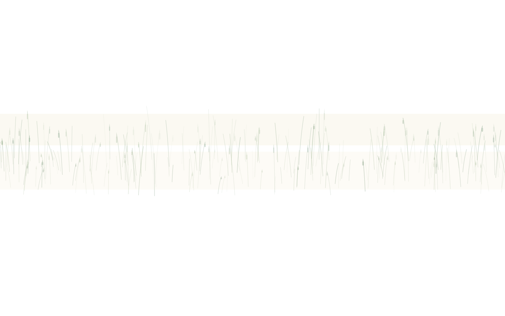
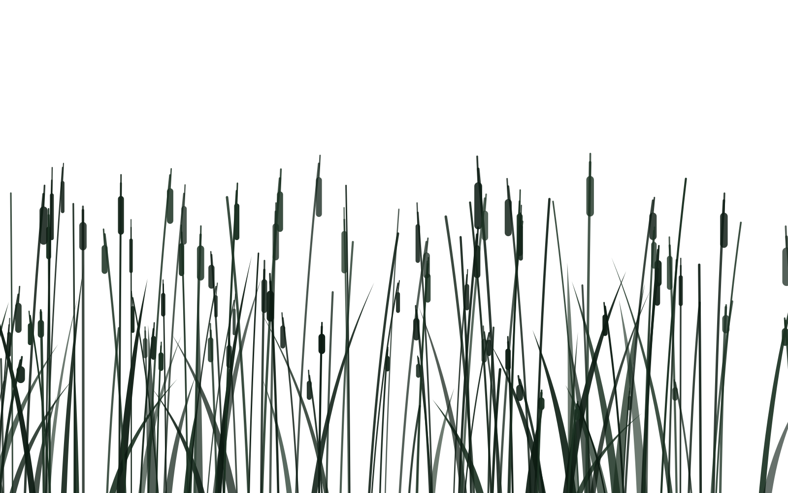
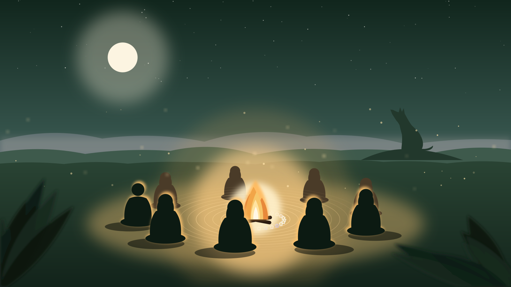
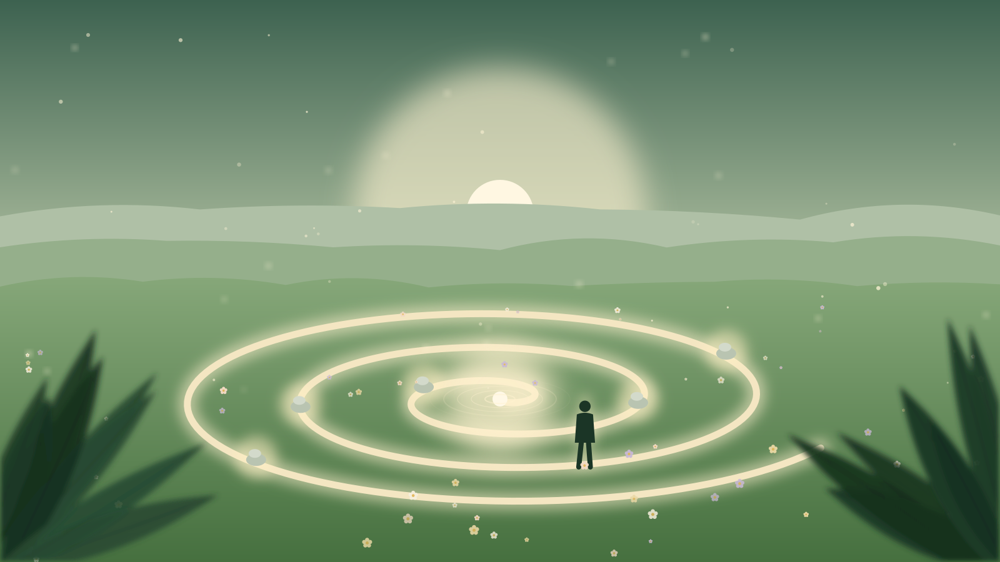
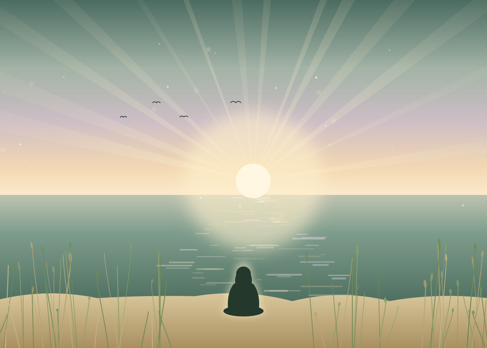

Individual
Sesión 1 a 1
Un encuentro individual desde la mirada de la Biodecodificación, para mirar de cerca lo que estás atravesando y empezar a darle otro lugar.
- Presencial o virtual


Te acompaño en tu proceso de crecimiento y transformación. Sesiones individuales, círculos de mujeres, programas y retiros.
No hace falta que sepas ponerle nombre a lo que te pasa. Con que tengas ganas de mirarlo, ya es suficiente para empezar.
Contame por dónde andásUna forma de mirar lo que te pasa —en el cuerpo, en los vínculos, en lo que se repite— como algo que tiene sentido y que se puede escuchar. No busca diagnosticar ni curar: propone entender.
Lo que aparece en el cuerpo o se repite en la vida no es un error a eliminar. Es algo que habla, y que se puede escuchar.
Muchas veces lo que nos pasa empezó antes que nosotras. Mirar la historia familiar ayuda a entender lo que se repite.
No hay recetas ni respuestas de afuera. Te acompaño mientras descubrís lo tuyo, en el tiempo que necesites.
Es un acompañamiento complementario: no reemplaza ningún tratamiento médico ni psicológico.
Propuestas
Individual, en grupo o lejos de la ciudad. Elegí la que se parezca a tu momento; si no sabés cuál, lo vemos juntas.
Individual
Un encuentro individual desde la mirada de la Biodecodificación, para mirar de cerca lo que estás atravesando y empezar a darle otro lugar.

Grupal · Mujeres
Un espacio de encuentro sostenido en el tiempo, donde leemos y trabajamos con «Mujeres que corren con los lobos», de Clarissa Pinkola Estés.

Grupal · Programas
Recorridos grupales, cada uno con su propio eje. Abren en distintos momentos del año.

Retiros
Unos días lejos del ruido, con el tiempo suficiente para que aparezca lo que estaba tapado. Las fechas se anuncian por Instagram.
Quién te acompaña
Soy Cecilia Esposito. Acompaño procesos de crecimiento y transformación desde la mirada de la Biodecodificación, en sesiones individuales, círculos, programas y retiros.
No vengo a decirte qué te pasa. Te acompaño mientras lo descubrís vos. A veces eso lleva un encuentro y a veces un proceso largo; siempre lleva tu tiempo, no el mío.
El Círculo de Mujeres y algunos de los programas los coordino en conjunto con Estela Fitere.
Un mensaje por WhatsApp contando, con las palabras que tengas, qué te trae.
Te cuento cómo trabajo y vemos juntas qué propuesta tiene sentido para este momento.
Coordinamos día y horario. Presencial o virtual, como te quede mejor.
No. No hace falta conocerla ni tener claro qué te pasa. Alcanza con querer mirarlo; lo demás lo vamos viendo juntas.
No. Es un acompañamiento complementario. No reemplaza ni interrumpe ningún tratamiento que estés haciendo.
Las dos modalidades sostienen el mismo trabajo. Elegís la que te quede más cómoda; si es presencial, te paso la dirección cuando coordinamos.
Depende de la propuesta y se actualiza. Escribime y te paso la información al día.
Abren en distintos momentos del año. Las fechas se anuncian por Instagram, y si me escribís te aviso cuando abra el que te interesa.
Cuando quieras empezar, estoy de este lado.